Наука · журнал «ДентАрт» 2017 №4
Анатомо-морфологічні, топографічні та біомеханічні особливості міжзубних контактних поверхонь постійних зубів. Частина III
ANATOMIC-MORPHOLOGICAL, TOPOGRAPHICAL AND BIOMECHANICAL FEATURES OF THE INTERDENTAL CONTACT POINTS OF PERMANENT TEETH. PART III
У руках лікарів лише з практичними знаннями медицина зійде на ступінь ремесла.
Г.Ф. Ланг (1875-1948)
Оглядовий аналіз доступних джерел з анатомії і морфології зубів засвідчив, що вони мають досить стандартну форму опису, де на особливості будови проксимальних поверхонь, у тому числі і міжзубних контактних пунктів, звертається найменше уваги. Однак проблема якісного реставрування каріозних дефектів класу ІІ по Блеку і зруйнованих контактних пунктів у природних зубах протягом багатьох років залишається однією з найактуальніших. У той же час не менш актуальна проблема пов'язана з відтворенням контактних поверхонь при непрямих реставраціях і в незнімних конструкціях, однак лише окремі дослідження присвячені вивченню цієї, на перший погляд, не настільки значущої теми в ортопедичній стоматології. Насправді ж її слід розглядати набагато ширше, включаючи і естетичний аспект, оскільки в підсумку естетика будь-якої реставрації абсолютно неповноцінна без здорового крайового пародонту і функціональної оклюзії. Досягти гарного результату шляхом моделювання можна, лише маючи глибокі знання з морфології зубів, гнатології і безперервно вдосконалюючи рівень мануальних навичок.
Міжзубні контактні пункти в нормі є свого роду природними з'єднувальними елементами, які набувають індивідуальної архітектоніки у процесі жувальної функції і сприяють формуванню складної за структурою і характером взаємодії денто-пародонтальної системи зубних рядів. Крім того, забезпечуючи морфологічну єдність зубних рядів, міжзубні контакти сусідніх зубів виконують захисну функцію для крайового пародонту над зоною міжзубного сосочка, під яким розташовується найтонший кортикальний шар міжзубної перегородки. Говорячи про елементи і систему зубних рядів, головним чином слід спиратися на основні поняття «елемент» і «система».
Під системою розуміють сукупність будь-яких елементів, які перебувають у певних зв'язках між собою і реагують на зміни навколишнього середовища як ціле. Будь-яка система характеризується двома основними ознаками: властивостями елементів, їх виразністю і типом зв'язків між ними. Елементом називають неподільну щодо системи її частину. У цьому аспекті під біологічним елементом слід розуміти найпростіший неподільний морфо-функціональний комплекс, який може виконувати специфічну функцію досліджуваної системи. Якісна відмінність «системи» як цілісного утворення від простої суми її компонентів зумовлена структурою системи. Під «структурою системи» розуміють співвідношення або типи зв'язків між елементами з безліччю істотних властивостей, що дозволяють точно виділити і відмежувати її від навколишнього середовища.1, 2
У свою чергу, зубні ряди як система є частиною біоконструкції вищого порядку організації, яка охоплює весь комплекс тканин і органів, що становлять зубощелепну систему.
Видатний учений І.П. Павлов (1909) стверджував, що «все життя від найпростіших до найскладніших організмів, включаючи, звичайно, і людину, є довгий ряд урівноважень із зовнішнім середовищем, які все ускладнюються до найвищого ступеня». Згідно з його уявленнями, провідним і визначальним фактором у будь-яких проявах організму є зовнішні подразники (безумовно- або умовно-рефлекторні реакції), що забезпечують динамічне урівноваження організму із зовнішнім світом.2
На основі «рефлекторної теорії» у другій половині ХХ століття зародилася теорія функціональних систем П.К. Анохіна (1978), яка вийшла в подальшому за рамки фізіологічних систем, і її загальні принципи можна також перенести і в сферу біомеханіки рухів людини. За визначенням П.К. Анохіна, функціональна система – це одиниця цілісного організму, яка складається динамічно для досягнення будь-якої його пристосувальної діяльності, і завжди на основі циклічних співвідношень, і вибірково об'єднує спеціальні центрально-периферійні утворення. Динамічна організація будь-якої функціональної системи будується за принципом саморегуляції. Доповнимо це визначення роз'ясненням термінів динаміка і динамічна симетрія. Динаміка – це розділ механіки, в якому вивчають рух тіл під дією докладених до них сил. Математики і фізики встановили фундаментальний зв'язок «симетрія – закон збереження».3 Якщо при визначенні симетрії за об'єкт обрати процес або взаємодію, за ознаку – деякі властивості, відношення, їх комбінації, то ці ознаки разом із реальними і/або уявними «фізичними» змінами, що їх зберігають, дадуть динамічну симетрію, яка дозволяє уявити принцип саморегуляції як закон збереження і зміни у живій чи неживій природі.3
У зв'язку з цим слід зазначити, що вперше найзагальніші уявлення про побудову рухів людини, у тому числі і з урахуванням їх здійснення у зовнішньому середовищі, розробив М.О. Бернштейн (1947). Він розробив і довів теорію складного багаторівневого процесу управління рухами з позицій рефлекторного кільця, що означає циклічну форму взаємодії між ЦНС і характером рухів, де кожен з рівнів управління має свою функцію, локалізацію, аферентацію. При цьому жоден рух, за рідкісними винятками, не контролюється і не обслуговується по всіх його координаційних деталях лише одним ведучим (для даного руху) рівнем побудови. «Кожна з деталей виконуваного складного руху рано чи пізно знаходить для себе серед нижчих рівнів такий, аферентації якого найадекватніші цій деталі за якостями забезпечуваних ними сенсорних реакцій».2 Отже, відповідальні за управління рухами рівні повинні мати деякі резерви варіативності і змінності реалізовуваних ними рухів для забезпечення їх гнучкої і точної адаптації до різнохарактерних умов дійсності. І.С. Рубінов (1965) зазначає, що згідно з фізіологічними даними, ефекторні ядра ретикулярної формації (n. ruber) беруть участь у механізмах регуляції тонусу скелетної мускулатури. Ці механізми входять до складу екстрапірамідної системи. Кіркові спадні пірамідні шляхи переважно забезпечують фазичні (довільні) скорочення жувальних м'язів. Відповідні механорецептори типу м'язових веретен, які містяться у цих м'язах, регулюють рухи нижньої щелепи і необхідну силу жувальних м'язів.4
На рівні функціональної жувальної ланки діє періодонто-мускулярний рефлекс, який здійснюється за допомогою природних зубів, де сила жувальної мускулатури регулюється ступенем чутливості рецепторів періодонту. «Завдяки механізму кірково-підкіркової взаємодії забезпечується тісне поєднання і узгодження функцій обох систем регуляції рухової і тонічної активності жувальної мускулатури».4
Таким чином, «усі види рухів у тілі людини будуються за принципом послідовного залучення ланок до виконання рухової дії. Практично всі види рухів, які робить людина або ланки тіла, складаються з поступального і обертального рухів. Сила м'язів у системі організму людини – це внутрішні сили. Оскільки при роботі м'язів послідовно відбувається їх скорочення і розтягування, то через поступально-обертальні і зворотно-обертальні мікропереміщення у кожному суглобовому зчленуванні ланки здійснюють деякий коливальний рух. Тверде тіло, рухливо з'єднане з іншими тілами, в кінематиці називають ланкою. У механіці кінематичною парою називають рухливе з'єднання двох ланок, що дотикаються. Система ланок, з'єднаних за допомогою кінематичних пар, утворює кінематичний ланцюг (замкнутий або відкритий)».5
Не забуваючи про серйозні практичні успіхи окремих розділів спеціальності, ми мусимо визнати, що достовірно не знаємо, які процеси відбуваються всередині зуба
В.Р. Окушко
Коливання – це періодичний рух або зміна стану об'єкта, ланки чи системи. Породжувані коливальними рухами збудження передаються від однієї точки середовища до іншої шляхом хвиль. Загальний характер зв'язків між коливаннями і хвилями всім добре відомий. Наприклад, кровоносними судинами поширюється хвиля, яку ми спостерігаємо, вимірюючи пульс. Затухаючі коливання виникають як вільні лише в реальних відкритих коливальних системах, де енергія зменшується через втрати на подолання сил тертя, в'язкості і т.п.6
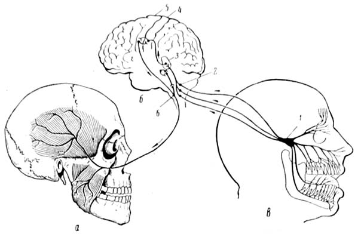
Подібний механізм повинен мати місце і в міжзубних контактних з'єднаннях, котрі, як ми встановили при мікроскопічному дослідженні, є складними суглобовими зчленуваннями, де під час жувальної функції послідовно поширюється коливальний рух у вигляді поперечної хвилі. Якщо це рух, при якому ланки беруть участь одночасно в поступальному і обертальному видах руху, як під час функції жування, то він називається складним. Оскільки мова піде про пружні тіла, а як відомо, не існує абсолютно твердого тіла, то доречно буде навести як приклад просту фізичну модель.
Моделлю пружного тіла є пружина, що підкоряється закону Гука*. Деформація (ε) миттєво з'являється в момент t=0 і миттєво зникає в момент t1. Її результат – пружна оборотна деформація. При деформації твердого тіла під дією докладених сил, як це відбувається при змиканні зубів, виникають сили пружності за рахунок протидії з боку міжмолекулярної реакції кристалічної решітки тіла, так само як розвиваються сили з боку опори (періодонту) – сили реакції опори, а саме явище розвитку протидії – реакція опори, яка прагне повернути тіло до свого природного, недеформованого стану. Отже, при впливі двох сил тіло може перебувати в рівновазі лише у тому випадку, якщо ці сили рівні за величиною, протилежні за напрямком та мають загальну лінію дії. Це правило має назву третього закону Ньютона.
*Закон Гука – твердження, згідно з яким деформація, що виникає у пружному тілі (пружині, стержні, консолі, балці і т.п.), пропорційна силі, докладеній до цього тіла. Закон відкрив 1660 року англійський учений Роберт Гук (Ел. енц-я Вікіпедія).
Коли дія деформуючої сили на тіло припиняється, потенційна енергія пружної деформації переходить у кінетичну. Наприклад, стиснення пружних елементів волокон періодонту відповідає поглинанню енергії, а їх розпрямлення – віддачі енергії, породжуючи тим самим коливальні рухи у вигляді поздовжніх або поперечних хвиль, залежно від напрямку жувального навантаження щодо осі зуба. Це означає, що хвилі, які генеруються коливаннями, переносять енергію, а відтак реалізується один з механізмів її рекуперації – передача енергії від ланки до ланки. Прикметно, що енергія, поглинена за певний період, пропорційна частоті.
Особливість тіла людини як біомеханічної системи полягає в тому, що саме нервово-м'язовий апарат є тим збудливим елементом у тілі людини, який реагує на зовнішній періодичний вплив. Частота діючої сили дорівнюватиме власній частоті коливань м'язового компонента біомеханічної системи. Це і є резонанс. Відомі власні частоти коливання окремих частин тіла людини, Гц: у ока – 12-17, горла – 6-27, голови – 8-27, хребта – 4-14, ніг і рук – 2-8 і т.д. У цьому випадку значення сили, необхідної для отримання заданої амплітуди, буде мінімальним при найменших енергетичних витратах. У ряді досліджень було отримано експериментальні дані, які підтверджують припущення, що рухова система людини селектує частоту рухів, реагуючи на частоту, яка збігається з резонансною частотою окремих ланок.2 Отже, коли говорять про частоти власних коливань тіла людини, то мають на увазі, що конкретні значення частот коливань залежать не лише від антропометричних показників і механічних індивідуальних характеристик ланок тіла, а й від розвитку нервово-м'язового апарату, що приводить ці ланки в рух. Саме в ньому закладені можливості зміни резонансних властивостей коливального руху ланок тіла при опорних взаємодіях.2
Б.П. Марков і співавт. (2004) вивчали зуби з пародонтом у стані відносної фізіологічної норми і встановили, що резонансна частота зубів становить у середньому 960±60 Гц. При патологічних змінах у пародонті, що супроводжуються збільшенням ступеня атрофії альвеолярної кістки і рухливістю зубів, їх резонансна частота знижувалася, у деяких випадках до 200 Гц. Таким чином, визначення спектру значень коливань зубів у нормі дозволяє діагностувати і вести динамічне спостереження за станом опорно-утримуючого апарату до і після ортопедичного лікування.7 Як бачимо, акумулюючи знання і досвід у вивченні явища резонансу, ця галузь медицини має серйозні перспективи отримати ширше застосування у ранній діагностиці, наприклад при порушенні фісурно-горбикового/ріжучо-горбикового або міжзубних проксимальних контактів при карієсі, патологічному стиранні чи деформаціях (вторинний глибокий прикус), інших клінічних ситуаціях, коли змінюються площа оклюзії, сила і напрямок функціонального навантаження за неадекватного прямого чи непрямого реставрування (супраоклюзія, інфраоклюзія, травматична оклюзія).
І.І. Постолакі (1967) на підставі клініко-експериментального дослідження глибокого прикусу у дітей встановив, що електрозбудливість зубів, які відчувають підвищене функціональне навантаження, знижується і залежить від сили м'язових скорочень. Як наслідок, на ділянці тканин пародонту спостерігається набряклість, здавлювання періодонту і резорбція кісткових тканин альвеолярних лунок, найбільш виражена в зоні дна. У результаті розвивається резорбція куполів міжальвеолярних перегородок, але глибина лунок зберігається і величина коронкової частини не змінюється.8 Якщо продовжити далі розвивати думку в контексті обговорюваної теми, то при дисбалансі артикуляційно-оклюзійних співвідношень з часом повинна змінюватися конфігурація міжзубних контактних майданчиків у напрямку їх збільшення, що додатково ускладнить клінічну картину з боку пародонту і опорно-утримуючого апарату, поряд зі зниженням електрозбудливості і резонансної частоти зубів. Чим нижча частота резонансних коливань зуба, тим меншою буде жорсткість системи «зуб – періодонт – кістка» і, відповідно, стійкість зуба.
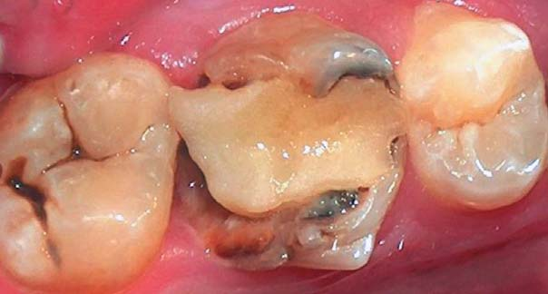
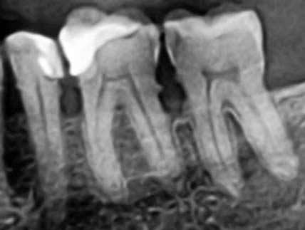
Г.І. Попов (2007) у книзі «Біомеханіка» подає відомості із серії наукових робіт, присвячених вивченню форми траєкторії робочої точки (W. Abend, I.A. Adams, 1985; P. Morasso, P. Viviani, F.A. Mussa-Ivaldi, 1987), при завданні випробовуваним рухати рукою по кривій лінії. При цьому було виявлено цікавий факт. Криволінійний рух часто складався з кількох сегментів різної кривизни, «зшитих» один з одним, оскільки у всіх випадках відбувалася апроксимація заданої кривої сегментами різної кривизни або навіть відрізками прямих, становлячи собою фрагментацію рухів. У місцях найбільшої кривизни траєкторії швидкість руху знижувалася, і автори узгоджують це з фактом, що тривалість рухів криволінійними шляхами більша, ніж прямими відрізками тієї самої довжини.2 Багато що тепер стає зрозумілим у висновках С.В. Рябова (2005), який визначив, що оклюзійні криві не є плавними лініями, які проходять по серединних фісурах бічних зубів, а наближаються до загальноприйнятого вигляду лише після проведення необхідних операцій апроксимації з мінімальним коефіцієнтом похибки.9 Виходячи зі сказаного та загальноприйнятих уявлень про компенсувальну роль оклюзійних кривих у зубощелепній системі, ми приходимо до ідеї про існування в організмі єдиних принципів і закономірностей у механіці рухів, здійснюваних на різних структурних рівнях.
Деформоване тіло «начинене» енергією, яка воліла б вивільнитися.
Дж.Е. Гордон
Результати експериментально-теоретичних досліджень Т.Ф. Даниліної (1997) лягли в основу сформульованих принципів біомеханічного підходу до лікування патології твердих тканин жувальних зубів. За Даниліною, коронку зуба слід розглядати як складну багатокомпонентну систему і функціональну поведінку її складових аналізувати в залежності від клінічного стану коронки, умов застосування функціональних навантажень, механічних характеристик твердих тканин зуба.10 Було «встановлено, що на функціональну міцність твердих тканин зуба впливає показник мікротвердості, який змінюється залежно від клінічного стану коронки. Ураження карієсом знижує мікротвердість емалі на 30-40%, а депульпування – на 23-26% у порівнянні з інтактною коронкою зуба. Мікротвердість дентину залишається практично на одному рівні (1,0-1,2)». Серед факторів, що визначають пружно-механічні властивості твердих тканин коронки зуба, Т.Ф. Даниліна найголовнішим вважає її анатомо-геометричні характеристики. Автор рекомендує при моделюванні оклюзійної поверхні створювати рівнорозподілені точки-майданчики змикання, виключаючи можливість їх концентрації у крайніх медіальних і дистальних точках оклюзійної поверхні.10
Якщо виходити з отриманих за допомогою мікроскопії нових даних про те, що проксимальні контактні майданчики – це складні за архітектонікою поверхні, аналогічні суглобовим, і відомих фактів про біомеханіку зубних рядів, то логічно виникає питання про особливості взаємодії міжзубних контактів під час функції. Коротко розглянемо біомеханіку суглобів. «Для виконання рухових дій найбільше значення мають синовіальні, які мають найбільшу рухливість (ліктьовий, тазостегновий, колінний, гомілковостопний), і хрящові, слабко рухомі (грудино-реберні, міжхребцеві диски)».2 Синовіальна рідина – це еластичне природне мастило, що нагадує плазму крові і виробляється власною хрящовою оболонкою самих суглобів для їх нормального функціонування. Вона є природним амортизатором і тим самим забезпечує рухливість кісток всередині суглоба, захищаючи їх кінцеві поверхні від передчасного зношування. Ця рідина зменшує коефіцієнт тертя в суглобі приблизно у 20 разів. Якщо суглоби відчувають дефіцит мастила, це загрожує передчасним зносом або незворотним руйнуванням суглобових поверхонь. Причиною цього може бути підвищений тиск на суглобовий хрящ, і тоді його змочування припиняється. У середньому і літньому віці із суглобової сумки рідини виділяється менше.2 У міжзубних контактах мають відбуватися аналогічні процеси. Завдяки гідравлічній системі зуба в нормі відбувається пасивне пропітніння зубної рідини, за складом близької до плазми, на всій поверхні емалі і, відповідно, на контактних майданчиках, що викликає самозволоження твердих тканин зубів і зменшує коефіцієнт тертя при навантаженні. Але воно не постійне, бо внутрідентинний тиск зазнає добових коливань (удень – нижчий, уночі – вищий), що відображає ритм пульсового і венозного тиску.11 І лише достатнє функціональне навантаження сприятиме активному виділенню зубної рідини на поверхню емалі і нормальній взаємодії всіх поєднаних ланок у зубних рядах.
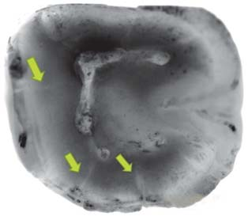
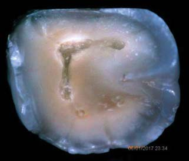
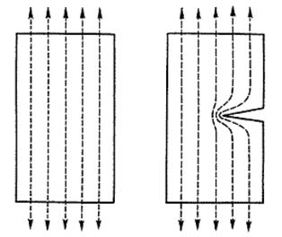
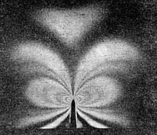
Ю.В Мандра (2011), вивчаючи ранні клінічні прояви і морфоструктурні зміни при патологічному стиранні зубів (ПСЗ), повідомляє, що каріозні ураження (первинні або раніше ліковані) зустрічалися у 100% обстежуваних хворих. «При оцінці якості пломб, поставлених раніше, було б виявлено невідповідність анатомічної форми зуба (із заниженням висоти прикусу) у 83% випадків, що могло бути причиною ПСЗ».12
Методами фізико-хімічного аналізу Ю.В. Мандра встановила, що при ранніх проявах ПСЗ відбувається збільшення адсорбційної висоти емалі у 2,5 раза, зменшення органічної складової дентину на 15,8%, зниження фторидів на 52,9%, зміна кристалічної структури і її симетрії з порушенням просторової решітки, що призводило до ізоморфних та ізоіонних заміщень гідроксиапатиту. На поверхні спостерігається переважання молекул карбонатапатитів, хлорапатитів над більш резистентними фторапатитами. Це несприятливий фактор, оскільки знижує кристалічність і резистентність тканини до кислотних і хімічних впливів, що виявиться вирішальним для поступового руйнування патологічно зміненої емалі під дією механічного навантаження.12
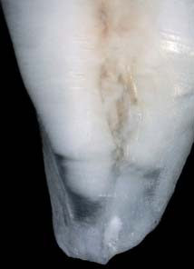
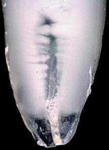
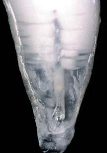
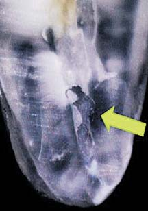
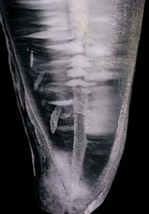
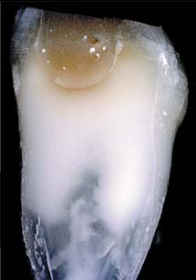
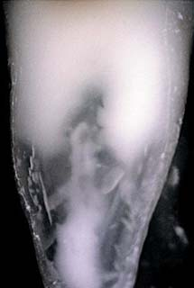
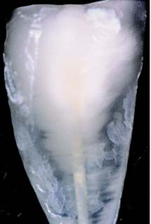
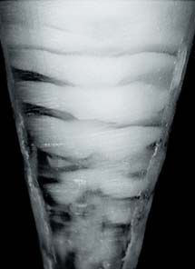
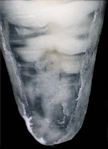
Мал. 4. Мікрофото зубів з попередньо видаленим поверхневим шаром емалі і цементу (зб. Х 20). Показано структурні особливості і морфологію дентину кореня в нормі (а) і при карієсі і/або патологічному стиранні. У коронковій частині і верхній 1/3 кореня спостерігаються значне утворення замісного дентину, відсутність правильно сформованого дентину в середніх і нижніх відділах кореня, його фрагментація (часткова або повна). На препаратах (б-д) чітко видно наявність тонкої оболонки кореневого каналу і її розрив у нижній 1/3 (в) зі слідами крововиливу (автор О. Постолакі).
Дуже часто в живих організмах для управління величиною зчеплення на межах анатомічних структур використовується водневий зв'язок у гідроксильній групі (-ОН). Порушення через яку-небудь причину (висушування, видалення і т.п.) водної оболонки, яка оточує кожну гідроксильну групу, веде до усадки біологічної тканини і до втрати її специфічних властивостей, наприклад, емалі та дентину. Це призводить до різкого підвищення крихкості, бо крихкість більшості природних мінералів пов'язана з їх більшою чи меншою однорідністю.15
Професор Інгліс у 1913 році запропонував поняття «концентрації напружень».* Він математично довів, що концентрація напружень залежить від форми отвору або надрізу (тріщини) і від властивостей матеріалу. З точки зору механіки, найменш сприятлива ситуація виникає в разі гострих тріщин і крихких матеріалів.
Концентрацією напружень у теорії пружності називають зосередження великих напруг на малих ділянках, прилеглих до місць з різного роду змінами форми поверхні або перетину деформованого тіла (в районі внутрішніх кутів, отворів, канавок і т.д.). Найнебезпечніші напруження припадають на ділянку, приблизно рівну площі одного атомного зв'язку, що проходить через кінчик гострої тріщини, яка є лінією у тривимірному просторі. На кожному наступному атомному зв'язку напруга пропорційно зменшиться більш ніж удвічі у порівнянні з максимальною величиною. У зоні, що примикає до тріщини з боку її кінчика, концентруються напруження розтягу паралельно поверхні тріщини, тобто під прямим кутом до напрямку докладеного навантаження. Як тільки перевантажений атомний зв'язок на кінчику тріщини лопне і пік концентрації напружень переміститься на наступний зв'язок, подібно, за влучним спостереженням Дж. Гордона, до петель на панчосі, – розмір тріщини збільшується, радіус її кінчика не змінюється, а отже, концентрація напружень зростає. Прийнято вважати, що концентрація напружень істотно зменшується в умовах пластичних деформацій.15
Коли в деформованому тілі з'являється тріщина, її краї розходяться на деяку відстань. Це означає, що тканини
*Уперше задачу про концентрацію напружень розв'язав учений В. Колосов.15
або матеріал, які оточують краї тріщини, не відчувають якогось значного напруження, що призводить до зменшення пружної деформації, і пружна енергія звільняється. Кількість вивільненої енергії має бути пропорційна квадратові довжини тріщини, або глибини її проникнення в тіло. Інакше кажучи, тріщина глибиною 2 мкм вивільняє у 4 рази більше пружної енергії, ніж тріщина глибиною 1 мкм, і т.д.
Вважається, що на внутрішньому боці дентинних канальців (у середньому діаметр 0,5-0,8 мкм) є найтонша плівка органічної речовини, багатої глікозаміногліканами, – межова пластинка (мембрана Неймана*), яка переходить у перитубулярний дентин.13 Як зазначає Л.І. Фалін (1963), уперше про існування особливих стінок, або оболонок у дентинних канальцях, стійких до дії міцних кислот і лугів, повідомив Нейман (1863). Далі вона переходить у щонайтоншу плівку Келлікера – Флейшмана, яка вистилає внутрішню субстанцію дентину з боку пульпи і проміжки між вхідними отворами дентинних канальців.16 Згадані оболонки аналогічні емалевим призмовим оболонкам і насмітовій кутикулі і є похідними ектоплазми.17 Протягом ХIХ-ХХ століть у наукових колах так і не склалося єдиної думки про наявність і властивості виявлених оболонок, і особливо нейманівської. У жодному з доступних наукових джерел не вдалося виявити якогось опису подібної оболонки у кореневих каналах. Пошук інформації про результати сучасних досліджень із цього питання дав лише поодинокі результати, практично нічого не додавши до вже відомих фактів.14,18
*Ернст Нейман, Франц Ернст Крістіан Нейман (нім. Ernst Neumann, Franz Ernst Christian Neumann; 30.01.1834, Кенігсберг – 06.03.1918, там само) – німецький патолог і гематолог. (Джерело: http://o-ili-v.ru/wiki/Нейман,_Франц_Эрнст_Кристиан).
Що ж до природи хвороби, то якщо вона може бути виявлена, вона може бути і вилікувана.
Гіппократ, «Про мистецтво»
Поряд зі спадковою схильністю і дисбалансом у гістогенезі емалі та дентину, професійними шкідливостями, розладом обміну речовин і захворюваннями шлунково-кишкового тракту особливе значення у патогенезі ПСЗ надається ендокринним (дисфункція щитоподібної і особливо паращитоподібних залоз) і нейродистрофічним порушенням в організмі, які супроводжуються неповноцінним звапнінням твердих тканин зубів. Тому вони не здатні сприймати значне за силою, у межах фізіологічної норми, оклюзійне навантаження, що призводить до ламкості і крихкості зубів, розвитку гіперцементозу і стискування періодонтальної щілини на боці тиску. У той же час слід звертати увагу на тип прикусу, форму зубних дуг і оклюзійних кривих (сагітальна Шпеє і трансверзальна Монсона – Вільсона), ікловий чи груповий напрямок при русі нижньої щелепи, ознаки функціонального перевантаження при концентруванні жувального тиску на окремих горбиках зубів або нераціональних реставраціях при руйнуванні чи втраті бічних зубів, стан жувальних м'язів і СНЩС.19,20
Таким чином, стирання зубів виникає внаслідок дії безлічі різних місцевих і загальних етіологічних факторів. І в цьому разі зміни, що відбуваються, зачіпають не тільки ріжучі краї і жувальну поверхню, але й проксимальні поверхні.
Далі буде...